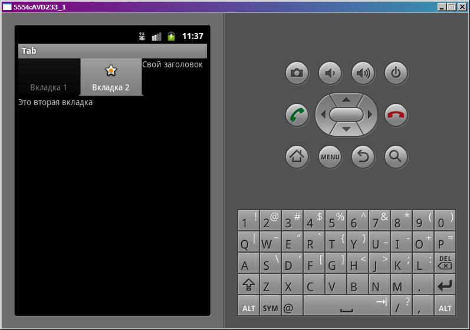
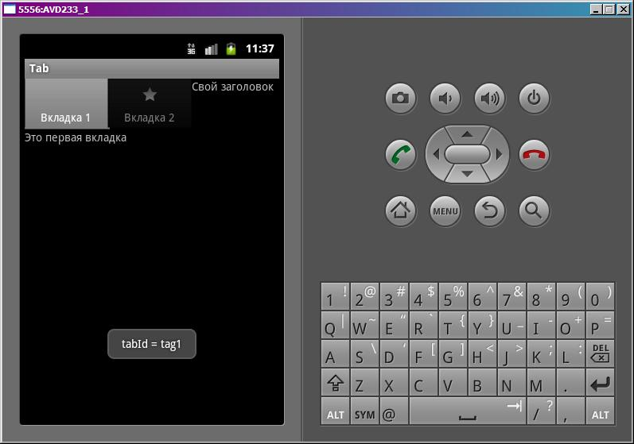

В этом уроке:
- создаем экран с вкладками
- используем иконку в названии вкладки
- используем обработчик перехода между вкладками
Вкладки помогают логически разделить содержимое экрана. Вместо того, чтобы бегать по разным экранам, вы можете сделать вкладки и переключаться между ними. В этом уроке создадим приложение с вкладками и посмотрим их основные возможности.
Создадим проект:
Project name: P0761_Tab
Build Target: Android 4.0
Application name: Tab
Package name: ru.startandroid.develop.p0761tab
Create Activity: MainActivity
Пропишем тексты в strings.xml:
<?xml version="1.0" encoding="utf-8"?>
<resources>
<string name="app_name">Tab</string>
<string name="text_tab1">Это первая вкладка</string>
<string name="text_tab2">Это вторая вкладка</string>
<string name="text_tab3">Это третья вкладка</string>
<string name="text_tab_header">Свой заголовок</string>
</resources>Удалим все дефолтное с экрана main.xml и добавим туда компонент TabHost из вкладки Composite:
<?xml version="1.0" encoding="utf-8"?>
<LinearLayout
xmlns:android="http://schemas.android.com/apk/res/android"
android:layout_width="fill_parent"
android:layout_height="fill_parent"
android:orientation="vertical">
<TabHost
android:id="@android:id/tabhost"
android:layout_width="match_parent"
android:layout_height="match_parent">
<LinearLayout
android:layout_width="match_parent"
android:layout_height="match_parent"
android:orientation="vertical">
<TabWidget
android:id="@android:id/tabs"
android:layout_width="match_parent"
android:layout_height="wrap_content">
</TabWidget>
<FrameLayout
android:id="@android:id/tabcontent"
android:layout_width="match_parent"
android:layout_height="match_parent">
<LinearLayout
android:id="@+id/tab1"
android:layout_width="match_parent"
android:layout_height="match_parent">
</LinearLayout>
<LinearLayout
android:id="@+id/tab2"
android:layout_width="match_parent"
android:layout_height="match_parent">
</LinearLayout>
<LinearLayout
android:id="@+id/tab3"
android:layout_width="match_parent"
android:layout_height="match_parent">
</LinearLayout>
</FrameLayout>
</LinearLayout>
</TabHost>
</LinearLayout>Компонент добавился и притащил с собой еще кучу всего. Давайте смотреть. TabHost – корневой элемент вкладок. В нем вертикальный LinearLayout, в котором расположены TabWidget и FrameLayout. TabWidget будет отображать заголовки вкладок, а FrameLayout – содержимое вкладок. В этом FrameLayout мы размещаем все View-компоненты, которые хотим отображать на вкладках. Позже мы (в коде) сообщим вкладке, какой именно компонент она должна показать (явно укажем id), вкладка выберет из этой общей кучи нужный ей компонент и отобразит его, как свое содержимое.
По дефолту во FrameLayout созданы три LinearLayout – они могут быть использованы, как контейнеры для содержимого вкладок. Т.е. вы их заполняете компонентами, как вам необходимо, а потом в коде просто указываете id нужного LinearLayout-а и он со всем содержимым отобразится на вкладке.
Нам сейчас не нужны LInearLayout, мы не будем делать вкладки с сложным содержимым, разместим во FrameLayout просто несколько TextView.
В итоге main.xml получился такой:
<?xml version="1.0" encoding="utf-8"?>
<LinearLayout
xmlns:android="http://schemas.android.com/apk/res/android"
android:layout_width="fill_parent"
android:layout_height="fill_parent"
android:orientation="vertical">
<TabHost
android:id="@android:id/tabhost"
android:layout_width="match_parent"
android:layout_height="match_parent">
<LinearLayout
android:layout_width="match_parent"
android:layout_height="match_parent"
android:orientation="vertical">
<TabWidget
android:id="@android:id/tabs"
android:layout_width="match_parent"
android:layout_height="wrap_content">
</TabWidget>
<FrameLayout
android:id="@android:id/tabcontent"
android:layout_width="match_parent"
android:layout_height="match_parent">
<TextView
android:id="@+id/tvTab1"
android:layout_width="wrap_content"
android:layout_height="wrap_content"
android:text="@string/text_tab1">
</TextView>
<TextView
android:id="@+id/tvTab2"
android:layout_width="wrap_content"
android:layout_height="wrap_content"
android:text="@string/text_tab2">
</TextView>
<TextView
android:id="@+id/tvTab3"
android:layout_width="wrap_content"
android:layout_height="wrap_content"
android:text="@string/text_tab3">
</TextView>
</FrameLayout>
</LinearLayout>
</TabHost>
</LinearLayout>Создадим еще один layout-файл - tab_header.xml:
<?xml version="1.0" encoding="utf-8"?>
<LinearLayout
xmlns:android="http://schemas.android.com/apk/res/android"
android:layout_width="match_parent"
android:layout_height="match_parent"
android:orientation="vertical">
<TextView
android:layout_width="wrap_content"
android:layout_height="wrap_content"
android:text="@string/text_tab_header">
</TextView>
</LinearLayout>Этот layout мы используем как свой экран для заголовка вкладки. Тут просто TextView.
Создайте в папке res папку drawable, если ее нет. В ней создайте файл tab_icon_selector.xml:
<?xml version="1.0" encoding="utf-8"?>
<selector xmlns:android="http://schemas.android.com/apk/res/android">
<item android:drawable="@android:drawable/star_on" android:state_selected="true"></item>
<item android:drawable="@android:drawable/star_off"></item>
</selector>Подробно об этом можно почитать тут. Этот xml-файл мы укажем как картинку для заголовка вкладки. И когда система будет прорисовывать заголовок вкладки, она обратится к этому файлу, чтобы понять какую картинку ей отображать. Этот код будет возвращать стандартную Android картинку star_on, если вкладка выбрана (state_selected="true"). Иначе вернет star_off. Далее увидим это в приложении, и станет понятней.
Кодим MainActivity.java:
package ru.startandroid.develop.p0761tab;
import android.app.Activity;
import android.os.Bundle;
import android.view.View;
import android.widget.TabHost;
import android.widget.TabHost.OnTabChangeListener;
import android.widget.Toast;
public class MainActivity extends Activity {
/** Called when the activity is first created. */
public void onCreate(Bundle savedInstanceState) {
super.onCreate(savedInstanceState);
setContentView(R.layout.main);
TabHost tabHost = (TabHost) findViewById(android.R.id.tabhost);
// инициализация
tabHost.setup();
TabHost.TabSpec tabSpec;
// создаем вкладку и указываем тег
tabSpec = tabHost.newTabSpec("tag1");
// название вкладки
tabSpec.setIndicator("Вкладка 1");
// указываем id компонента из FrameLayout, он и станет содержимым
tabSpec.setContent(R.id.tvTab1);
// добавляем в корневой элемент
tabHost.addTab(tabSpec);
tabSpec = tabHost.newTabSpec("tag2");
// указываем название и картинку
// в нашем случае вместо картинки идет xml-файл,
// который определяет картинку по состоянию вкладки
tabSpec.setIndicator("Вкладка 2", getResources().getDrawable(R.drawable.tab_icon_selector));
tabSpec.setContent(R.id.tvTab2);
tabHost.addTab(tabSpec);
tabSpec = tabHost.newTabSpec("tag3");
// создаем View из layout-файла
View v = getLayoutInflater().inflate(R.layout.tab_header, null);
// и устанавливаем его, как заголовок
tabSpec.setIndicator(v);
tabSpec.setContent(R.id.tvTab3);
tabHost.addTab(tabSpec);
// вторая вкладка будет выбрана по умолчанию
tabHost.setCurrentTabByTag("tag2");
// обработчик переключения вкладок
tabHost.setOnTabChangedListener(new OnTabChangeListener() {
public void onTabChanged(String tabId) {
Toast.makeText(getBaseContext(), "tabId = " + tabId, Toast.LENGTH_SHORT).show();
}
});
}
}Находим компонент TabHost. Обратите внимание, используется андроидный id. Он был таким по умолчанию при добавлении компонента в main.xml. В принципе, в нашем случае, этот id можно сменить на свой. Далее вызываем обязательный метод setup. Это первичная инициализация. В этом методе TabHost находит в себе TabWidget и FrameLayout. Вот их id в main.xml менять нельзя. Иначе TabHost будет ругаться, что не может их найти.
Далее создаем три вкладки. Для создания используется метод newTabSpec, на вход он берет тэг. Тэг – это просто некий строковый идентификатор вкладки. Позже увидим, где он используется. Для первой вкладки задаем название методом setIndicator. В метод setContent передаем id компонента (из FrameLayout), который мы хотели бы видеть в качестве содержимого вкладки. В нашем случае это TextView. Метод addTab присоединяет готовую вкладку к TabHost.
Вторая вкладка создается аналогично, только используем другую реализацию метода setIndicator. Заголовок вкладки может содержать не только текст, но и картинку. И здесь мы это используем – передаем в метод текст и xml вместо картинки. Тот самый xml, который определяет картинку по состоянию вкладки. Разумеется, если вам нужна статичная картинка, вы можете указать ее и не использовать xml вообще.
При создании третьей вкладки используем еще одну реализацию метода setIndicator, которая берет на вход View и его ставит как заголовок. Используем тут наш layout-файл tab_header.
Вкладки созданы. Устанавливаем (setCurrentTabByTag) вторую в качестве выбранной по умолчанию. И пропишем (setOnTabChangedListener) для TabHost обработчик, который срабатывает при переключении вкладок. Будем выводить сообщение с тэгом вкладки.
Все сохраним и запустим приложение.

Выбрана вторая вкладка, т.к. мы это определили методом setCurrentTabByTag. Ее содержимое – это TextView с id = tvTab2, как мы и указывали в коде в методе setContent при создании вкладки.
У третьей вкладки заголовок соответствует содержимому tab_header, т.к. мы использовали setIndicator, который принимает на вход View.
Выберем первую вкладку.

Сработал обработчик и появилось сообщение с тэгом выбранной вкладки. Содержимое первой вкладки – это TextView с id = tvTab1 из FrameLayout.
Обратите внимание, что сменилась картинка на заголовке второй вкладки. Это обеспечил selector из res/drawable/tab_icon_selector. В зависимости от состояния вкладки он выдает разные картинки.